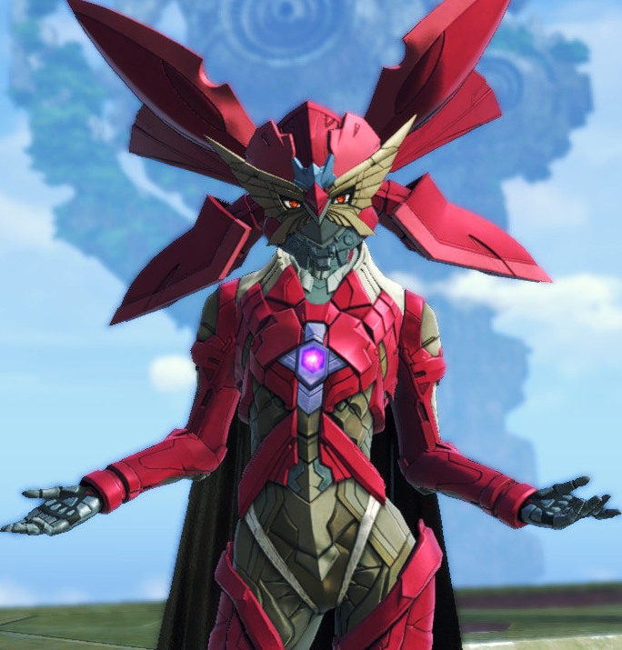

Noah
Noah is a Kevesi soldier and an off-seer.
Along with his friends Lanz and Eunie, he is assigned to Colony 9.
He is a Kevesi human with Homs traits who, despite his slim physique,
has impressive physical power
Mio
Mio is a soldier of Agnus and from Colony Gamma along with Sena and Taion.
She is an off-seer who was initially working for Colony Gamma's arms expansion force.
Mio is an Agnian human with Flesh Eater Blade and Gormotti traits.

Sena
Sena is a soldier from Agnus along with Mio and Taion and from Colony Gamma.
She is an Agnian human with Blade traits.

Lanz
Along with his friends Noah and Eunie, he is a Kevesi soldier assigned to Colony 9.
Lanz is a Kevesi human with Machina traits..
Euine
Along with her friends Noah and Lanz, Eunie is a Kevesi soldier stationed at Colony 9.
She is a Kevesi human with High Entia traits.
Taion
Taion is an Agnian soldier along with Mio and Sena. He is an Agnian human with Blade Eater traits.

Z
Z is the master of the Consuls and the source of all Moebius, along with X and Y.
Consul N
N is the "Golden Consul", who oversees the Consuls of Keves. Believing there is no way to escape fate,
he pursues Noah and his allies on their mission to break the cycle of violence that binds their homelands.
Consul M
Unlike the other Consuls, she is horrified by what she was turned into and is disgusted by her need to drain the life force of other living beings to survive.
Her Moebius ability is Eclipse Soul, allowing her to temporarily override or swap souls with other people.
Consul J
He was a healer class, and wielded a healing rod.
He could place regeneration fields, similarly to Eunie. He was kindhearted, although weak and clumsy.
Consul X
Alongside with Y and Z, X is one of the original and first Consuls.

Consul Y
Y is a Consul and the inventor of the Flame Clocks, this was his gift as an "Avatar" of Z.
He oversees Colony Omega and uses its residents as test subjects for his deranged "research".
Along with X and Z, he is one of the original Consuls.
At some point, Mio, Miyabi, and Sena were assigned to his colony.
One of his experiments went awry, killing most of the colony members leaving Mio, Sena, and unbeknownst to the former two, Miyabi as the sole three survivors.